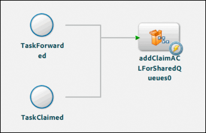

|

You can configure Assign Task and Assign Multiple Tasks
operations that the User service provides to control task functionality
in LiveCycle Workspace:
Make opening tasks optional
By
default, users are required to open tasks in Workspace before they
complete the task. However for some processes opening the task to
review the content is not mandatory. For example, the task description
that appears in the To Do list can convey enough information that
enables users to make decisions. In this situation, to work more
efficiently, users can complete the task directly from the To Do
list.
Note:
Some processes require that users review the
form before they complete the task. Some industries have common
business processes where laws stipulate this requirement.
Make opening tasks optional:
-
Select the Assign Task
or Assign Multiple Tasks operation on the process diagram.
-
In the Process Properties view, expand the Workspace User
Interface property group.
-
Clear the User Must Open The Form To Complete The Task property.
Maximizing the form or Guide
You can cause task forms and Guides to use all available
space in the web browser window by default when opened in Workspace.
Users can still maximize or minimize the display area of the form
as needed.
Note:
The maximized form or Guide obscures some of
the Workspace UI.
Maximize the form or Guide
-
Select the Assign Task or Assign
Multiple Tasks operation on the process diagram.
-
In the Process Properties view, expand the Workspace User
Interface property group.
-
Select Maximize The Form When Opened In Workspace.
Require confirmation when submitting tasks
You can display a confirmation message to Workspace users
when they submit a task. Users can either click OK to agree to the
message or click Cancel. The message can be any text that you provide.
You can also include HTML code to format the appearance.
Confirmation messages are useful when a contractual agreement
is required between you and the user. For example, your legal policies
require that users attest to the validity of the information they
provided in a form. When they submit the form in Workspace, the
confirmation message can ask them to click OK to attest that the
information they provided is true.
When users click OK in the confirmation dialog, the task completes.
The Cancel button closes the dialog and returns the user to the
task. Along with the IP address and the user ID that is also stored,
the confirmation message is an effective click-through electronic
signature.
Confirmation messages are associated with user actions. You can
provide a different confirmation message for different user actions.
Add a confirmation message to a user action:
-
Select
the Assign Task or Assign Multiple Tasks operation on the process
diagram.
-
In the Process Properties view, expand the User Action Names property
group.
-
Add a new action or edit the action to add the confirmation
message to:
-
To add a new action, click the Add A User
Action button
.
-
To edit an action, click the Modify A User Action button
.
-
In the Action Name box, type the name of the action as you
want it to appear to the user.
-
Select This Action Needs Confirmation, And Will Use The Following Text
As The Message.
-
In the box, type the message. You can include XPath expressions
in the message. When evaluated at run time, the value of the expression
is inserted into the message. To open XPath builder, click the ellipsis
button
 .
.
-
Click OK.
Specifying the Workspace user interface
You can control which set of tools are available in Workspace
when users open tasks by selecting one of the following options:
-
Default:
-
The standard set of Workspace features are available.
-
Approval Container:
-
Provides tools for reviewing documents. The tools enable
users to see the status of the review, add comments, and see the
task instructions. This option is typically selected for review
and approval processes.

The Task Result Collection
that stores task output provides the information that appears in
the approval container. (See
Saving task data
.)
-
Custom:
-
You can develop a custom set of tools and integrate them
with Workspace. The tools are created by using the LiveCycle ES2.5
SDK. (See
Programming with LiveCycleES2.5
.)
For example, you can customize the way task notes and process variables
are displayed, or create custom rules such as requiring attachments
to be added before completing the task.
To use a custom set
of tools, you also specify where the executable files are located
on the LiveCycle server.
Specify Workspace tools:
-
Select the Assign Task or Assign
Multiple Tasks operation on the process diagram.
-
In the Process Properties view, expand the Workspace User
Interface property group.
-
Select Default, Approval Container, or Custom.
-
If you selected Custom, click Browse and locate the SWF file
for the custom tools.
Setting time constraints
To ensure that tasks are completed within a specific amount
of time, specify constraints on the amount of time a user has to
complete tasks:
You can specify whether the time constraints that you configure
are in calendar days or in business days. (See
About business calendars
.) Each user is associated with a business
calendar, as configured by using the Process Management administration
tools. (See “Configuring Business Days” in
Process
Management Administration Help
.)
Time constraints are important for Assign Multiple
Tasks operations. There is a higher chance that delays can occur
in completing all of the tasks that the operation generates.
About business calendars
Business calendars
define
business and non-business days (for example, statutory holidays,
weekends, and company shutdown days) for your organization. When
using business calendars, LiveCycle ES2.5 skips non-business days
when performing certain date calculations. You can specify whether
to use business calendars for the following types of items:
-
User-associated events such as task reminders, deadlines,
and escalations
-
Actions not associated with users, such as Timer Events and
the Wait service
For example, a task reminder is configured to occur three business
days after the task is assigned to a user. The task is assigned
on Thursday. However, the following three days are not business
days because Friday is a national holiday and the next two days
are weekend days. The reminder is therefore sent on Wednesday of
the next week.
Note:
When you use business calendars, time calculations
are done to the nearest day. When using the default calendar, calculations
are done to the nearest minute.
When calculating dates and times using business calendars, LiveCycle
ES2.5 uses the date and time of the server where it is running.
The server does not adjust for the difference between time zones.
For example, a task reminder is scheduled to occur at 10:00 A.M.
on a server running in London. The user who receives the reminder
is in New York City. The user receives the reminder at 5:00 A.M.
local time.
You can define business calendars and business days by using
the Process Management administration tools in LiveCycle Administration
Console. (See
Process Management Administration Help
.)
Sending reminders about tasks
Set reminders
for Assign Task and Assign Multiple Tasks operations to prompt users to
complete the associated tasks. Reminders help to ensure that the
user who is assigned a task completes it in a timely manner. You
can send an initial reminder with the option of repeating the reminder
at regular intervals.
The dates when reminders occur can be expressed by using either
calendar days or business days. You can also change the task instructions
when the reminder occurs. When a reminder occurs, a clock icon appears
for the task in Workspace. You can also send an email message to
the user.
Note:
Reminders remain configured for Assign Task
and Assign Multiple Tasks operations even if they are reassigned
to another user through escalation. If you are configuring both
reminders and escalations, ensure that the timing for them is appropriate.
The time is measured from when the task is first assigned to
a user.
Configure reminders:
-
Select the Assign Task or Assign Multiple
Tasks operation on the process diagram.
-
In the Process Properties view, expand the Reminders property group.
-
In the list next to the Reminders label, select Literal Value.
If
you select XPath Expression, the expression that you create must evaluate
to a ReminderInfo value.
-
Select Enable First Reminder.
-
To calculate the date when the reminder occurs using business calendars,
select Use Business Calendar.
-
Specify the amount of time that passes after the task is
initially assigned until the reminder occurs:
-
In
the Days box, type the number of days.
-
(Calendar days only) In the Hours box, type the number of
hours in addition to the days you specified.
-
(Calendar days only) In the Minutes box, type the number
of minutes in addition to the days and hours you specified.
-
To specify that the reminder occurs at regular intervals,
select Enable Repeat Reminder.
-
To calculate the date when the reminder occurs using business calendars,
select Use Business Calendar.
-
Specify the amount of time between reminders:
-
In the Days box, type the number of days.
-
(Calendar days only) In the Hours box, type the number of
hours in addition to the days you specified.
-
(Calendar days only) In the Minutes box, type the number
of minutes in addition to the days and hours you specified.
-
To change the task instructions when the reminder occurs,
select Change Task Instructions On Reminder and, in the box, type
new instructions. You can also click the ellipsis button
and
create an XPath expression that provides specific task instructions
when the reminder occurs.
Setting deadlines for tasks
Set
a deadline on a task if you want to limit the amount of time that
users are given to complete the task. After the deadline period
elapses, the task state is automatically set to complete. Optionally,
the process can continue using a route that follows the task on
the process diagram.
The date when a deadline occurs can be expressed by using either
calendar days or business days. The time is measured from when the
task is first assigned to a user. You can change the task instructions
when the deadline occurs and a clock icon appears for the task in
Workspace. You can also send an email message to the user.
When a deadline occurs, if the user saved a draft of the task
the saved information is submitted with the task. Typically, information
that is saved with the draft is incomplete and not reliable. Follow
a specific route when deadlines occur. When this route is followed,
you know the task information is not reliable.
Set a deadline:
-
Select the Assign Task or Assign Multiple
Tasks operation on the process diagram.
-
In the Process Properties view, expand the Deadline property group.
-
In the list next to the Deadline label, select Literal Value.
If
you select XPath Expression, the expression that you create must evaluate
to a DeadlineInfo value.
-
Select Enable Deadline.
-
To calculate the date when the deadline occurs using business calendars,
select Use Business Calendar.
-
Specify the amount of time that passes after the task is
initially assigned until the deadline occurs:
-
In the
Days box, type the number of days.
-
(Calendar days only) In the Hours box, type the number of
hours in addition to the days you specified.
-
(Calendar days only) In the Minutes box, type the number
of minutes in addition to the days and hours you specified.
-
To change the task instructions when the deadline occurs,
select Change Task Instructions On Deadline and, in the box, type
new instructions. You can also click the ellipsis button
and
create an Xpath expression that provides specific task instructions
when the deadline occurs.
-
To follow a route after the deadline occurs, select Follow
A Specific Route On Deadline and, in the Select Route list, select
an existing route.
Escalating tasks
For
Assign Task operations, you can assign a task to another user when
a task is not completed within a certain period. For example, if
a loan officer does not complete a loan application within two days,
it can be assigned to the loan officer’s supervisor. Escalations
are also useful for forwarded tasks. If a forwarded task is not
completed in a timely manner, you can assign the task back to the
user who forwarded the task.
You can also use reminders to encourage the completion
of critical tasks.
To configure an escalation, specify the time period after which
the escalation occurs, as well as the user who is assigned the task.
The date when an escalation occurs can be expressed by using either
calendar days or business days.
Important:
The process stalls if you escalate the
task to a user who does not exist.
The escalation time period is measured from when the task is
first assigned to a user. Escalation does not occur if you do not
specify a time period.
Reassign a task as part of escalation:
-
Select the Assign
Task operation on the process diagram.
-
In the Process Properties view, expand the Escalation property group.
-
In the Escalate Task area, select Escalate Task.
-
To calculate the date when the escalation occurs using business calendars,
in the Schedule Escalation area, select Use Business Calendar.
-
Specify the amount of time after the task is initially assigned
that the escalation occurs:
-
In the Days box, type
the number of days.
-
(Calendar days only) In the Hours box, type the number of
hours in addition to the days you specified.
-
(Calendar days only) In the Minutes box, type the number
of minutes in addition to the days and hours you specified.
-
In the Select Escalation User area, specify the user who
is assigned the task when the escalation occurs. (See
Send a task to one user
.)
-
Specify whether to reassign the task based on the user’s
out-of-office preferences. (See
Assigning tasks to users
.)
Overriding task notification settings
Email
notifications can be sent to users when they are assigned a task,
and when reminders and deadlines occur. Email notification settings
are configured globally by using the Process Management tools in
LiveCycle Administration Console. However, you can override the
following settings for tasks that Assign User operations generate:
The settings that are configured in LiveCycle Administration
Console are used by default. (See
Process
Management Administration Help
.)
In Workspace, users can configure preferences so that they are
sent email about tasks that they are assigned. By default, Workspace
users are configured to receive email notifications. (See
LiveCycle Workspace 9 Help
.)
Configure email notifications:
-
Select the Assign Task or
Assign Multiple Tasks operation on the process diagram.
-
In the Process Properties view, expand the Custom Email Templates property
group.
-
In the Custom Email Templates area, select the type of notification
to configure:
-
Task Assignment:
When the task
is assigned to a user
-
Reminder:
When a reminder occurs
-
Deadline:
When a deadline occurs
-
Select the notification configuration to use:
-
Use Server Default:
The notification settings are used
as configured in LiveCycle Administration Console.
-
Do Not Send Email:
No notifications are sent.
-
Customize:
Send an email and use a custom email template
to define the message subject and body.
-
If you selected Customize, click Edit Email Template to define
the custom email template that is used. (See
Creating email templates
.)
-
Repeat steps 3–5 for each type of notification that you want
to configure.
Creating email templates
Email templates define
the subject and body of email notification messages. You can create
email templates when you override the global settings for task notifications.
(See
Overriding task notification settings
.)
You can specify the following properties of email messages:
-
Content of the message subject
-
Content of the message body
-
Encoding to use for the message
-
Message format (text or HTML)
-
Whether to attach the task form in the message. This option
is not available for deadlines.
Note:
Only PDF forms can be attached to email messages.
If you are rendering XDP files to HTML for use in Workspace, the
forms are rendered to PDF for email attachments.
Use the Email Template Editor dialog box to author the email
template. The dialog box provides several buttons that simplify
the authoring process. When you click a button, text is automatically
added to the email template. The following table describes the buttons.
|
Button
|
Description
|
|
XPath
|
Inserts an XPath expression enclosed by
curly brackets ({}) and dollar signs ($). At run time, the value
that the expression evaluates to replaces the expression.
|
|
@@
|
Inserts process management variables enclosed
by @@ symbols. At run time, the value of the variables replaces
the variable name:
Task Id:
The identification of the
current task.
Instructions:
The value of the Task
Instructions property of the Assign Task operation.
Process Name:
The
name of the process.
NotificationHost:
The name of
the computer that sends the notifications. In clustered environments,
only one LiveCycle server in the cluster sends notifications.
Operation Name:
The
value of the Name property for the Assign Task or Assign Multiple Tasks
operation.
Description:
The value of the Description
property for the Assign Task or Assign Multiple Tasks operation.
Actions:
A
numbered list of user actions for the task. Users can click the
action they want to use to complete the task.
|
|
URL (HTML only)
|
Inserts the HTML code that provides a link
to the task:
<a href="http://@@notification-host@@:<PORT>/workspace/Main.html?
taskId=@@taskid@@">Click here to open the Task</a>
Note:
Type a port number in place of
<PORT>
in
the URL.
For information about other parameters that
you can use in the URL, see
Workspace URL parameters
.
|
|
Para (HTML only)
|
Inserts
<p></p>
tags.
|
|
Break (HTML only)
|
Inserts
<br/>
tag.
|
|
Bold (HTML only)
|
Inserts
<b></b>
tag.
|
|
Italics (HTML only)
|
Inserts
<i></i>
tags.
|
|
Color (HTML only)
|
Inserts the following HTML code:
<span style="color:Red;"></span>
|
|
Font (HTML only)
|
Inserts the following HTML code for specifying
a change in font style:
<span style="font-family: arial, sans-serif; font-size: xx-small;">
|
|
Link (HTML only)
|
Inserts the following HTML code for adding
hypertext:
<a target="_blank" href=""></a>
|
|
Table (HTML only)
|
Adds the following HTML code, which defines
a table that has two rows and two columns:
<table border="1" cellpadding="1" cellspacing="0" width="100%">
<tr>
<td align="left" valign="middle" width="50%"
bgcolor="Silver"> </td>
<td align="left" valign="middle" width="50%"
bgcolor="Silver"> </td></tr>
<tr>
<td align="left" valign="middle" width="50%"> </td>
<td align="left" valign="middle" width="50%"> </td></tr>
</table>
|
Note:
You can use other HTML tags as required.
For information about how to open the Email Template Editor dialog
box, see
Overriding task notification settings
.
Configure a custom email template:
-
In the Subject box,
enter the content to use for the email subject. Use the XPath or
@@ button as required.
-
In the Encoding list, select an encoding to use for the email.
-
In the Body Format list, select the format to use for the
email message.
-
On the Body tab, enter the content to use for the email subject.
Use the buttons to insert content as required.
-
(Task Assignment and reminders) To include the form and data
as an attachment to an email for the task, select Include Form Data
In Email.
-
(Optional) Click the HTML Preview tab to test the appearance
of the email template and then click OK.
Workspace URL parameters
You can include parameters in the URL for Workspace so
that hypertext links open to a specific area of Workspace. For example,
if you are including the link to a task in a task notification email,
the link can open the task in the web browser.
Workspace URLs have the following format:
http://[server name]:[port]/workspace?[parm]=[value]
[server name]
is the name of the LiveCycle server
[port]
is the server port used for LiveCycle ES2.5
[parm]
is the name of the parameter
[value]
is the value of the parameter
The following table lists the parameters and their valid values.
|
Parameter name
|
Value
|
Result
|
|
|
The ID of an existing task.
|
Opens the form for the task in the To Do
page.
|
|
|
The following values are valid:
-
startProcess
-
toDo
-
tracking
|
Opens a specific Workspace page. The value
determines the page:
startProcess:
The favorite area
of the Start Process page.
toDo:
The To Do page.
tracking:
The
Tracking page
|
|
|
[service name].[endpoint name]
|
Opens the form in the Start Process page
for invoking the process.
For example, the following URL opens
the form for a process named SimpleMortgageLoan-PDF with a TaskManager
endpoint named SimpleMortgageLoan-PDF:
http://localhost:8080/workspace?startEndpoint=SimpleMortgageLoan-PDF.SimpleMortgageLoan-PDF
|
The ID of a task is not defined until the task
is created. The ID is available when the prepare data service of
an action profile executes. You can use the prepare data service
to obtain the task ID. (See
About prepare data services
.)
Enable task completion by replying to notification email
To complete tasks, users can reply to email notifications
that they receive when they are assigned tasks. When replying, users
need to include the name of a user action in the body of the reply.
The included user action is used to complete the task.
You can include links in the task notification email that, when
clicked, create the email message to use to reply. If no user actions
are defined for the task, a single link is provided for completing
the task. To include the links, add
@@actions@@
to
the template for email notifications. (See
Creating email templates
.)
Include enough information in the notification
email so that users can make decisions without opening the task.
The Assign Task or Assign Multiple Tasks operation must allow
tasks to be completed without opening them. (See
Make opening tasks optional
.) If opening tasks is required, replies
to email notifications have no affect.
Configuring task delegations and consultations
For
Assign task operations, you can restrict who a user can delegate
or consult with for a task:
-
When users delegate a task, it is either forwarded to
another user or shared. Another user who belongs to a specific group
can claim shared tasks.
-
When users consult a task, the task is assigned to another
user to help complete the task. However, ownership still belongs
to the user who consulted the task.
You can also restrict who a user can delegate or consult a task
with by specifying a group of users.
Restrict delegation or consultation of tasks:
-
Select the
Assign Task operation on the process diagram.
-
In the Process Properties view, expand the Delegation and
Consultation property group.
-
To restrict who can receive forwarded tasks and access shared
tasks to the users in a group, perform the following steps:
-
Select Forward To And Share With Only Members Of This Group.
-
Click the Browse button, select a group, and click OK.
-
To restrict who can be used for consultation to the users
in a group, perform the following steps:
-
Select Consult
Only To Members Of This Group.
-
Click the Browse button, select a group, and click OK.
Note:
If you specify the property values by using an
XPath Expression, the expression must evaluate to a Task Delegate
And Consult data item.
Configuring the sharing of forwarded tasks
By default, Workspace users can
access tasks that are forwarded to queues that they shared queue
access to. The Share Tasks For Shared Queues process, which is installed
and activated when you install Process Management, implements this
feature.
For example, the director of a business unit configured the queue
so that the business unit's administrator has shared queue access.
When a Workspace user forwards the director a task, the Share Tasks
For Shared Queues process is invoked. The administrator is also
provided access to the forwarded task.
If you do not want to forward tasks that are sent to shared queues,
undeploy the Share Tasks For Shared Queues process.
Note:
When the Queue Sharing service is deactivated,
the associated user interface appears unchanged in Workspace. As
a result, error reports can appear in the LiveCycle server log.
Configuring the sharing of claimed tasks
By default, the Share Tasks For Shared Queues process allows Workspace
users to access tasks that are forwarded to shared queues. You can also
configure LiveCycle ES2.5 to allow users to access tasks that are
claimed from other queues.
For example, user1 shares a work queue with user2, and user2
shares a work queue with user3. When user2 claims a task from the
user1’s queue, it appears in the queue that both user2 and user3
share. Both users have access to it.
Note:
When a user claims a task, Workspace locks the
task. Users cannot see claimed tasks in To Do lists that they have
shared access to.
Because access to claimed tasks is not part of the installed
Share Tasks For Shared Queues process, you must modify the process
to add this functionality. This procedure involves adding a TaskClaimed
event to the process diagram and configuring it to store the results
in process variables. When this process is activated, users have
shared access to both the tasks that are forwarded and the tasks
that are claimed from another user’s queue.
Modify the Share Tasks For Shared Queues process:
-
Click
Window > Show View > Processes and expand the Process Management
category.
-
Right-click the Share Tasks For Shared Queues-1.0 process
version, select Deactivate, and then select Edit.
-
Drag the Event abstract element onto the process diagram.
-
In the Name box, specify the name of the event (for example, TaskClaimed
event).
-
Click Select An Event, expand the Asynchronous event category, select
TaskClaimed, and click OK.
-
Click Start Point and do the following tasks to configure
the event:
-
Click the Callback-Process Data Map tab.
-
In the Destination Data Set tree, double-click
taskID
.
The following expression appears in the Process Data name box:
process_data/@taskID
-
In the Source Data Set tree, expand MapContent and double-click
TaskID
.
The following expression appears in the Event Content box:
/MapContent/TaskID
-
Click Add to add the expression to the table.
-
Repeat the steps to create expressions that map
queueId
to
QueueId
and
userId
to
AssignedUser
.
The
following expressions are in the table:
/process_data/@taskID = /MapContent/TaskID
/process_data/@queueId = /MapContent/QueueId
/process_data/@userId = /MapContent/AssignedUser
-
Click OK. The Share Tasks For Shared Queues process diagram
looks like this illustration.

-
Click File > Save, and then right-click the process version
and select Activate.
Configuring access to task functionality
The Access
control list (ACL) restricts the use of Workspace features for specific
users. For each user who can be assigned the task, you can create
an ACL that controls the user’s access to the following task features:
-
Claim:
-
The user can claim the task from another users queue.
-
Add Notes:
-
The user can add notes to the task and also set the access
permissions for the notes.
-
Share:
-
The user can share the task. When a task is shared, the original
permissions are enforced, and the user who the task is shared with
can claim the task as their own.
-
Forward:
-
The user can forward the task to another user. When tasks
are forwarded, the ACL is still enforced for the user it is forwarded
to.
-
Add Attachments:
-
The user can add attachments to the task and also set the
access permissions for the attachments.
-
Consult:
-
The user can consult the task. Consulting is similar to forwarding;
however, the user who is consulted cannot complete the task. After
the user who is consulted submits the form, it is returned to the
original owner. The original owner then submits the form to complete
the task.
Default ACL
All Assign Task and Assign Multiple Tasks operations
include a default ACL. Unless you create an ACL for a specific user,
the default ACL is used for that user. To control the availability
of features for specific users, create an ACL for that user. The
default ACL allows users to add attachments, forward the task, and
add notes and attachments. This ACL is suitable for most design
scenarios.
The default ACL is named
<default ACL>
.
ACLs and shared queues
You can extend the ACL to users who
have shared access to the assigned user’s queue. The permissions
that are set in the ACL for the assigned user are extended to users
with shared queue access.
Important:
Do not extend
the ACL to users who have shared queue access if the task exposes
confidential information. For example, users’ social security numbers
are typically kept private.
ACLs and forwarded tasks
ACLs are not extended to users who
are forwarded tasks. For example, when a user who has an ACL created
for them forwards a task to another user, that user is restricted
according to their ACL, or the default ACL.
Specifying users
You can specify the users to apply ACLs to by searching
for them or by using XPath expressions:
When you
use XPath expressions, the expressions must evaluate to one of the
following types of information:
-
The global unique
identifier (GUID) of the user account, such as
9A7AD945-CA53-11D1-BBD0-0080C76670C0
-
The login name of the user, such as
atanaka
-
The canonical name of the user, such as
atanaka.sampleorganization.com
-
The email address, such as
atanaka@sampleorganization.com
-
The common name, such as
Akira Tanaka
-
The
User
value
that represents the user
Add an ACL for a user:
-
Select the Assign Task or Assign
Multiple Tasks operation on the process diagram.
-
In the Process Properties view, expand the Task Access Control
List (ACL) property group.
-
In the Task ACLs area, click Add.
-
In the Search Type area, select the property of the user
account to search on, either User Name or Email.
-
In the topmost box, enter text that matches all or part of
the property that is being searched, and then click Find.
-
In the Results box, select the user, click Add, and then
click OK.
You can add only one user at a time. When you add
a user, their ACL provides access to the Add Notes, Forward, and
Add Attachments features by default.
-
Select the user from the user list.
-
Select and deselect permissions for the selected user.
Extend the ACL to shared queues:
 In the Task Access Control
List property group, select Add ACL For Shared Queue.
In the Task Access Control
List property group, select Add ACL For Shared Queue.
Delete a user from the access control list:
Select the
user from the user list and click Delete.
Configuring attachments and notes
You
can specify whether the attachment window appears in Workspace for
a task. You can also populate the attachment window with notes and
attachments:
When the task is completed, you can save the attachments and
notes in a list of document variables.
Note:
The document values are appended to the end
of the list if the list value already contains documents. To replace
a list, specify the index of the first item in the list. For example,
you specify the XPath expression
/process_data/listVar[1]
.
Assign Task and Assign Multiple Tasks operations do not show
the attachment window by default.When you use attachments or notes
in a process, consider whether they are important to the process
and how much storage space they require.
Attachments and notes within subprocesses are
not directly available to the main process. You can make them available
with an output variable of type
list
and a subtype
of
document
.
Configure attachments and notes:
-
Select the Assign Task
or Assign Multiple Tasks operation on the process diagram.
-
In the Process Properties view, expand the Attachments property group.
-
To show the attachment window in Workspace, select Show Attachment
Window For This Task.
-
To specify the attachments to initially attach, use the Input
List to select a list variable that contains the documents to attach.
-
For Assign Task operations, to save attachments that are
submitted with the task, use the Output Attachments list to select
a list variable to use to store the attachments.
Attachments
submitted for Assign Task and Assign Multiple Tasks operations can
be saved with submitted task data. (See
Saving task data
.)
Specifying task priority
You
can specify the priority of a task so that Workspace users can sort
their tasks by priority. Tasks that have priorities other than NORMAL
appear with color-coded exclamation marks. The following priority
levels are provided:
-
HIGHEST
-
HIGH
-
NORMAL
-
LOW
-
LOWEST
Specifying a priority does not affect how the process executes
on the server.
Specify task priority:
-
Select the Assign Task or Assign
Multiple Tasks operation on the process diagram.
-
In the Process Properties view, expand the Priority property group.
-
In the Task Priority list, select the priority to assign
to the task.
|
|
|